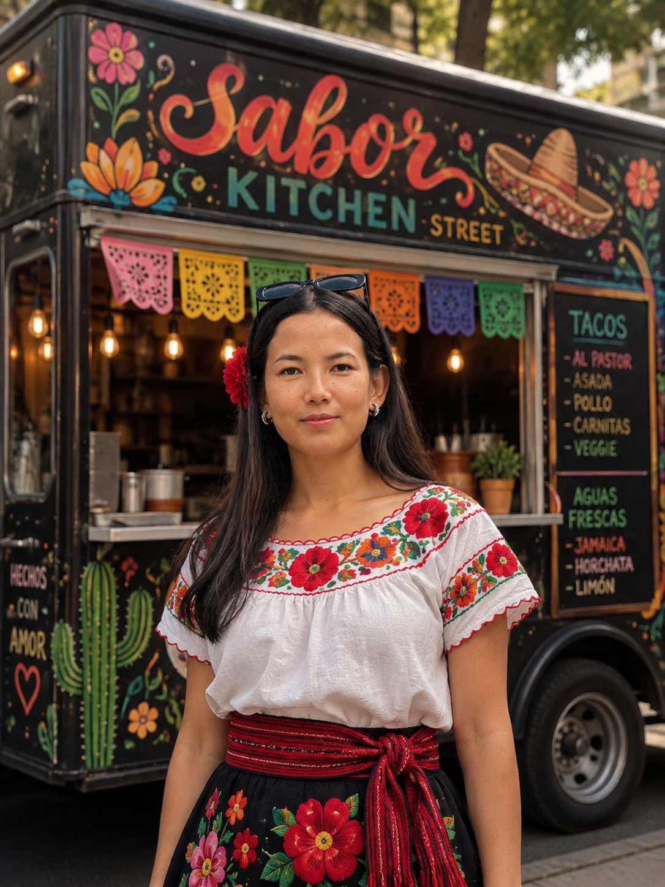
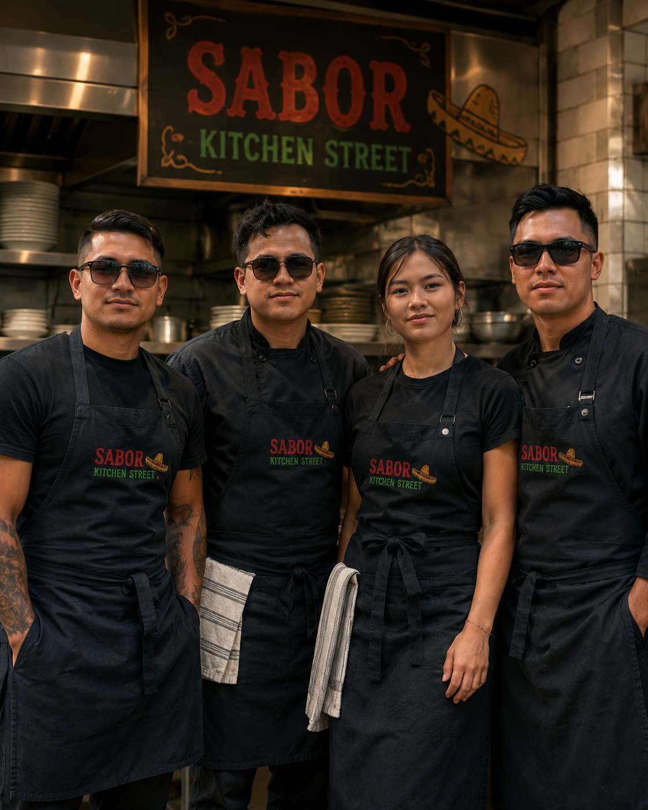

Our Story
A folding table, a propane grill, and a family salsa recipe; here's how Sabor Street Kitchen came to be.
Started With One Cart
In 2018, founder Elena Ruiz set up a single folding table at the Riverside Night Market with a propane grill, a cooler of marinated skirt steak, and her grandmother's salsa recipes written on index cards. Word spread fast. Within a year, the line for "the taco cart with the good salsa" wrapped around the block every Friday night.
Sabor Street Kitchen moved into its first permanent storefront on Frederick Street in 2021, but the goal never changed: cook the way Elena's family cooked on Sunday afternoons, just fast enough for a Tuesday night crowd.

From Cart to Storefront
-
2018 — The First Cart
One folding table, one grill, and a Friday-night spot at the Riverside Night Market.
-
2019 — The Line Around the Block
Word of mouth turns a side hustle into a regular gig, five nights a week.
-
2021 — A Real Kitchen
Sabor Street Kitchen opens its first storefront on Frederick Street, keeping the same late hours.
-
2024 — Still Family-Run
Elena's brother Diego joins as head of the kitchen; the recipe box grows to forty-plus salsas.
How We Cook
Made From Scratch
Tortillas pressed daily, salsas built fresh every morning, nothing from a can.
Honest Ingredients
Locally sourced produce where we can get it, and meat from suppliers we've visited ourselves.
Late-Night Friendly
Open past most kitchens close, because the best conversations happen after 9pm.
Everyone's Invited
Vegetarian, vegan, and gluten-free options on every part of the menu, clearly labeled.

Meet the Crew
Sabor Street Kitchen is run by a small, tight kitchen crew who've mostly been here since the early cart days. Diego runs the grill, Marisol and Kev handles every salsa by hand, and Elena still drops in most nights to say hello to regulars by name.
Come Say Hi